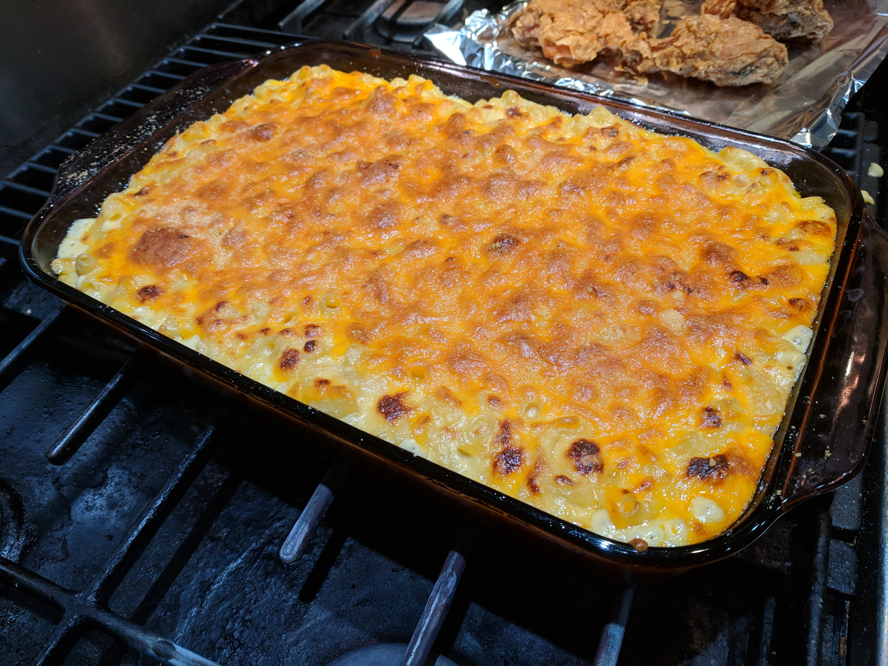

Homemade Mac and Cheese

Description
This mac and cheese recipe has many similarities to another of my
favorites; One Pan Baked Ziti. They are both creamy, and dreamy, comfort
food that gets baked to cheesy, bubbly perfection in the oven.
Ingredients
- elbow macaroni
- butter
- flour
- salt
- ground black pepper
- milk
- half and half
- shredded cheddar cheese
Steps
-
Preheat the oven. Preheat to 325 degrees and lightly grease a square
baking dish.
-
Cook the macaroni. Slightly undercook your noodles (about 1 minute under
al-dente). Drain and set aside.
-
Make the roux. Melt the butter in a medium saucepan over medium heat.
Blend in the flour, salt, and pepper. Cook for 2 minutes.
-
Add milk and cheese. Stir in milk and half and half, slowly, stirring
constantly. Remove from heat. Add 1 cup shredded cheese to the sauce and
stir just until melted. Add the cooked macaroni noodles and toss to coat
them in the sauce.
-
Pour into baking dish. Pour half or the pasta mixture into the prepared
baking dish. Sprinkle ½ cup cheese over the top. Pour remaining pasta
over it and sprinkle with remaining cheese.